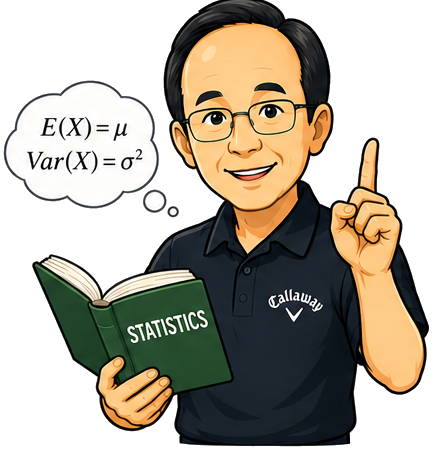

7.3 Mini Project7.3 小型專題
1 · Concept and Fundamental Knowledge1 · 概念與基礎知識

Why an electronic engineer needs this. A project is where probability becomes an engineering habit: state a question, build a model, simulate repeated trials, compare with theory when possible, and report a decision with uncertainty.電子工程師為什麼需要這個。專題讓機率成為工程習慣：提出問題、建立模型、重複模擬試驗、可行時與理論比較，最後用不確定性說明決策。
Definition · Monte Carlo project定義 · 蒙地卡羅專題
A Monte Carlo project estimates an unknown probability or expected value by repeated random trials. The output is not just a number, but a reproducible model, code, figure, and interpretation.蒙地卡羅專題透過重複隨機試驗估計未知機率或期望值。輸出不只是數字，而是可重現的模型、程式、圖形與解釋。
Simulate it first先模擬看看
Predict: in a simple link where each packet fails with probability 0.08, what is the chance at least one packet fails in a burst of 10?預測：在每個封包失敗機率為 0.08 的簡單鏈路中，連續 10 個封包至少一個失敗的機率是多少？
import numpy as np
rng = np.random.default_rng(17)
trials = 200_000
fail = rng.random((trials, 10)) < 0.08
at_least_one = fail.any(axis=1)
print(at_least_one.mean())Observed: about \(0.566\), matching \(1-0.92^{10}\).觀察結果：約 \(0.566\)，符合 \(1-0.92^{10}\)。
Key terms · project deliverables重要名詞 · 專題交付項目
- Question. A probability or expected value that can be checked by simulation.問題。可用模擬檢查的機率或期望值。
- Assumptions. The independence, distribution, and parameter choices behind the model.假設。模型背後的獨立性、分布與參數選擇。
- Uncertainty. The simulation estimate changes slightly from run to run, so report its stability.不確定性。模擬估計每次執行會略有變動，因此要報告其穩定性。
Rule · the four-part project loop規則 · 四步專題循環
Use this order: question, model, simulation, decision. The report should make it possible for another student to rerun your simulation and get a similar conclusion.依序使用：問題、模型、模擬、決策。報告應讓另一位同學能重新執行你的模擬，並得到相近結論。
2 · Worked Examples2 · 範例（詳解）
Example 1 · Packet burst risk範例 1 · 封包突發風險
Each packet independently fails with probability 0.05. Estimate the chance that a burst of 20 packets has at least one failure. Use the four-part flow in the diagram above: question, model, simulation, decision.每個封包獨立失敗的機率為 0.05。估計 20 個封包的突發傳輸中至少一個失敗的機率。使用上方圖中的四步流程：問題、模型、模擬、決策。
Reading it off, step by step逐步判讀
| Quantity量 | Value值 | How you read it判讀方式 |
|---|---|---|
| Question問題 | \(P(X\ge 1)\) | At least one packet fails.至少一個封包失敗。 |
| Model模型 | \(X\sim\operatorname{Bin}(20,0.05)\) | Count failures in 20 independent packets.計算 20 個獨立封包中的失敗數。 |
| Decision決策 | \(1-0.95^{20}=0.642\) | Use the complement of no failures.使用沒有失敗的補集。 |
The plain project uses one clean random variable and one direct probability.基本專題使用一個清楚的隨機變數與一個直接機率。
Example 2 · Estimate plus uncertainty範例 2 · 估計值加不確定性
Repeat the packet simulation five times with different seeds and report whether the estimate is stable. Follow the same four-part flow shown above.用不同種子重複封包模擬五次，並報告估計值是否穩定。沿用上方相同的四步流程。
Reading it off, step by step逐步判讀
| Quantity量 | Value值 | How you read it判讀方式 |
|---|---|---|
| Runs執行 | \(5\) | Use several seeds, not one lucky run.使用多個種子，不只看單次幸運結果。 |
| Spread散布 | small小 | Large trial counts should give nearby estimates.大量試驗應給出相近估計。 |
| Report報告 | mean range平均與範圍 | State both central value and variation.同時說明中心值與變動範圍。 |
The wrinkle is reporting uncertainty, not just a single estimate.這題多了不確定性報告，而不是只給單一估計值。
Example 3 · Choose a backup policy (engineering)範例 3 · 選擇備援策略（工程應用）
A sensor fails during a mission with probability 0.12. Decide whether two independent sensors are enough to keep failure risk below 0.02. Map the work to the same question-model-simulation-decision flow above.某感測器在任務中失效的機率為 0.12。判斷兩個獨立感測器是否足以讓失效風險低於 0.02。把解題過程對應到上方相同的問題、模型、模擬、決策流程。
Reading it off, step by step逐步判讀
| Quantity量 | Value值 | How you read it判讀方式 |
|---|---|---|
| System fail系統失效 | both fail兩者皆失效 | Backup works if at least one sensor survives.只要至少一個感測器存活，備援就有效。 |
| Risk風險 | \(0.12^2=0.0144\) | Independent failures multiply.獨立失效機率相乘。 |
| Decision決策 | enough足夠 | \(0.0144\lt 0.02\).因為 \(0.0144\lt 0.02\)。 |
The engineering project ends with an actionable policy, not only a formula.工程專題最後要形成可採取的策略，而不只是公式。
3 · Exercises3 · 練習
Exercise 1 · Frame your project練習 1 · 定義你的專題
Choose one topic: packet failures, sensor backup, or manufacturing defects. Use the single flow diagram above as your checklist.選一個主題：封包失敗、感測器備援或製造不良。使用上方單一流程圖作為檢查表。
- Write one measurable probability question.寫出一個可量測的機率問題。
- Name the random variable.命名隨機變數。
- List at least two assumptions.列出至少兩個假設。
Show full solution顯示完整解答
One valid frame is packet failures in a burst:一個可行框架是突發封包失敗：
\[ X=\text{number of failed packets in 50 transmissions}. \]
Question: what is \(P(X\ge 3)\)? Assumptions: packet failures are independent, and each packet has the same failure probability.問題：\(P(X\ge 3)\) 是多少？假設：封包失敗彼此獨立，且每個封包有相同失敗機率。
Sense check. The question names a count, a sample size, and an event, so it is ready for simulation.合理性檢查。此問題已命名計數、樣本大小與事件，因此可進入模擬。
Exercise 2 · Build the project evidence練習 2 · 建立專題證據
For your chosen topic, plan the evidence that will go into the final report. Reuse the same flow diagram above instead of drawing it again.針對你選定的主題，規劃最後報告需要的證據。沿用上方同一張流程圖，不需要再次重畫。
- Write the simulation loop in words.用文字寫出模擬迴圈。
- Choose one figure for the report.選一張要放入報告的圖。
- State the decision rule.說明決策規則。
Show full solution顯示完整解答
For packet failures, repeat these steps: generate 50 random packet outcomes, count failures, record whether \(X\ge 3\), and repeat many times.以封包失敗為例，重複步驟為：產生 50 個隨機封包結果、計算失敗數、記錄是否 \(X\ge 3\)，再重複多次。
\[ \widehat P=\frac{\#\{\text{runs with }X\ge 3\}}{\text{number of runs}}. \]
A useful figure is a bar showing estimated risk beside the maximum allowed risk. The decision rule is to accept the design only when the estimate is below the requirement with a stable margin.有用的圖可以是估計風險與最高允許風險並列的長條圖。決策規則是：只有當估計值低於需求且有穩定餘裕時，才接受設計。
Sense check. The evidence connects simulation output directly to a decision.合理性檢查。這份證據把模擬輸出直接連到決策。
Ask an AI tutor問問 AI 家教
- Explain · Explain what makes a Monte Carlo project reproducible.解釋什麼讓蒙地卡羅專題具有可重現性。
- Practice · Help me turn a sensor backup idea into a probability question.幫我把感測器備援想法轉成機率問題。
- Reflect · Why should a project report include assumptions?為什麼專題報告必須包含假設？
- Extend · How can I add confidence intervals to my simulation result?如何替我的模擬結果加入信賴區間？